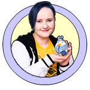

My Neopets
About Me

- Yuliya Svist
- Junior Front End Web Developer
- Currently employed by
- KiwiCo, Inc.
- Why Neopets of all things?
- As I continue my web developer journey, it's important to look back on where it all started. Also, I just wanted to have some fun with it.
Contact